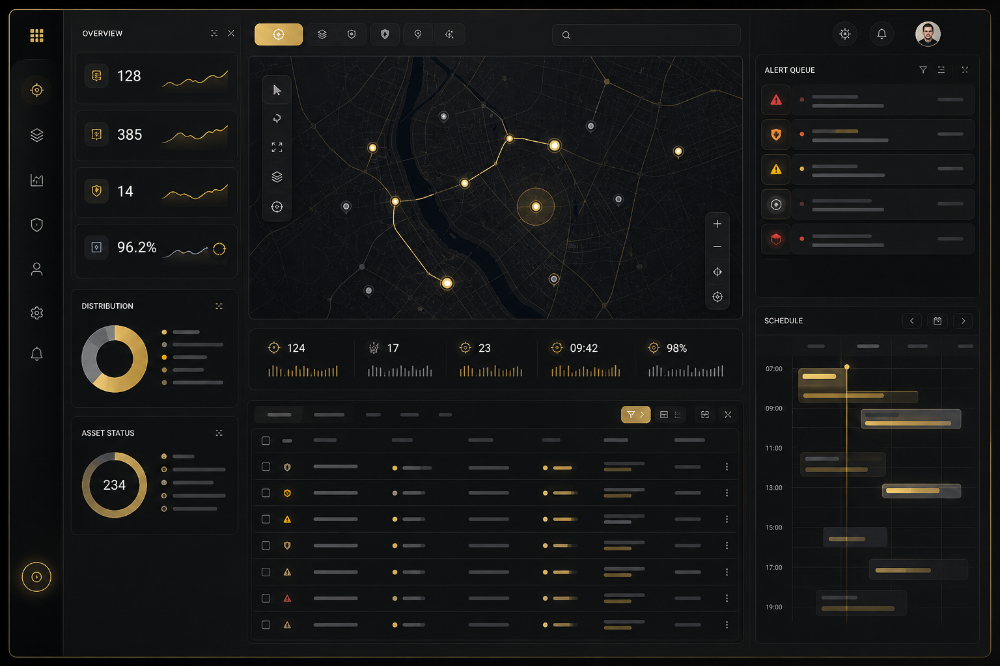

We engineer live fleet tracking dashboards, operational status grids, dispatch interfaces, and alert management systems — built for logistics and transport companies where real-time accuracy and operational speed are not negotiable.

Fleet management interfaces occupy a unique position in the landscape of enterprise web applications. They combine the real-time data challenges of financial trading systems — high-frequency position updates, sub-second latency requirements, data consistency across concurrent views — with the operational complexity of logistics management: job assignment workflows, alert triage protocols, multi-depot coordination, and exception handling for vehicles that deviate from expected routes or schedules.
Most frontend engineers who have not built a production fleet tracking system significantly underestimate this complexity. The naive implementation — open a WebSocket, receive position updates, re-render markers on a map — works acceptably in demonstrations with a dozen vehicles and a controlled network environment. It fails in production with 800 vehicles, mobile network connectivity, and dispatchers who need to coordinate response to a breakdown while simultaneously monitoring an on-time delivery crisis across three depots.
The failure modes are predictable. Without proper update throttling and buffering, receiving 50 position updates per second for 800 vehicles — 40,000 events per second — saturates the browser's JavaScript execution budget and causes the entire UI to freeze. Without proper marker clustering and progressive reveal on the map, rendering 800 markers simultaneously causes the map interaction to become unusable. Without robust reconnection logic and connection state indicators, dispatchers continue making decisions based on stale data after a network disruption, unaware that the position information they are looking at is 3 minutes old. Without a properly designed alert queue that requires explicit acknowledgement, critical alerts are scrolled past and missed during busy operational periods.
These are not hypothetical failure scenarios — they are the specific problems that operations managers and dispatchers describe when they explain why their current fleet management UI "doesn't work in practice." We build fleet UIs that work in practice: under real operational load, with imperfect connectivity, with the full complexity of a live fleet during a peak operational period.
The engineering architecture for a production fleet management UI is determined by the operational requirements: fleet size, update frequency, number of concurrent users, alert volume, and the specific workflows that dispatchers and operations managers perform. Our approach addresses each of these systematically.
Fleet position data arrives via WebSocket as a stream of vehicle state updates. Each update typically contains vehicle ID, GPS coordinates, speed, heading, status code, driver ID, and job assignment. At 800 vehicles reporting every 5 seconds, this is 160 updates per second — a data rate that must be handled without blocking the main thread or causing perceptible render jank.
We implement WebSocket management using RxJS's webSocket factory, wrapped in a service that handles authentication handshakes, heartbeat protocols, and reconnection. Reconnection uses exponential back-off starting at 1 second, doubling up to 30 seconds with randomised jitter. Connection state is exposed as an observable enum and surfaced visibly in the UI — dispatchers must know whether they are seeing live data or a frozen snapshot. Client-side buffering accumulates incoming updates and flushes them to the render layer at 30Hz using animationFrameScheduler, ensuring the UI updates smoothly without attempting to re-render on every incoming message. Position update throttling prevents a single highly active vehicle from dominating the update budget — each vehicle's position is updated at most once per render cycle regardless of how many position messages have been received since the last flush.
Where WebSocket is unavailable due to infrastructure constraints or network middleboxes that close long-lived connections, we implement a graceful degradation path to HTTP polling at a configurable interval, with a clear status indicator informing users of the mode change and its implications for update latency.
The vehicle status grid is the operational command centre of the fleet dashboard: a continuously updating table showing every vehicle's current status, position, driver, job assignment, and alert state. At 800+ vehicles, this grid must use CDK Virtual Scrolling — only the rows currently visible in the viewport exist in the DOM, with rows created and destroyed at scroll time. The change detection strategy is OnPush throughout, with memoised NgRx entity selectors ensuring that a grid row only triggers re-render when the data for that specific vehicle entity changes.
Filtering and sorting of the vehicle grid must be reactive: when a dispatcher types in the search field to filter to "Depot B", the visible rows update instantly without a loading state. When they sort by "Delay", vehicles with the most severe delays rise to the top immediately. These operations are performed on the client side against the NgRx entity store, using Web Workers for the sorting and filtering computations when the fleet is large enough to make these operations measurably expensive.
The tracking map is the spatial representation of the fleet state. We support Leaflet.js, Mapbox GL, and Google Maps depending on client requirements and data privacy constraints. All three require the same careful engineering approach to remain performant with large fleets.
Marker clustering is the critical optimisation for fleets above approximately 200 vehicles. At low zoom levels, showing 800 individual vehicle markers is visually overwhelming and computationally expensive. Clustering groups nearby vehicles into cluster markers displaying a count, with progressive reveal of individual vehicles as the user zooms in. We implement server-side clustering for very large fleets to avoid transmitting all position data to the client at low zoom levels. Marker update patterns are engineered to avoid unnecessary DOM manipulation: each vehicle has a persistent marker instance that has its position updated in place rather than being destroyed and recreated on each position change.
Alert management is where fleet management UI most directly affects operational outcomes. A missed alert can mean a vehicle breakdown that delays delivery windows for 40 subsequent stops, or a driver hours violation that creates legal liability. The UI design for alerts must treat the reliability of alert delivery as a first-class engineering concern.
We implement tiered alert severity — informational, warning, critical — with distinct visual treatment that is not dependent on colour alone (for accessibility). Critical alerts are displayed in a persistent alert queue that requires explicit per-alert acknowledgement; they are not automatically dismissed by time and cannot be removed by clicking elsewhere. Alert history is maintained with resolution tracking, including who acknowledged each alert and when, creating an audit trail for operational review. Alert-to-vehicle context switching — clicking an alert to jump to the affected vehicle in both the map view and the status grid — is implemented as a first-class navigation action with smooth map pan-and-zoom to the vehicle's current position.
Job assignment and dispatch workflows are time-critical operations where interaction latency directly translates to operational delay. When a dispatcher needs to reassign a job from a delayed vehicle to an available one, every second of UI friction is a second added to the customer's wait. We design dispatch interfaces around keyboard-first interaction: tab navigation between vehicle and job lists, keyboard shortcuts for common dispatch operations, and confirmation dialogs that can be confirmed without reaching for the mouse.
Drag-and-drop job assignment provides an intuitive interface for visual thinkers, but it is always paired with a keyboard-accessible equivalent. Optimistic status updates ensure that job assignments appear to take effect immediately rather than waiting for API round-trips, with visual rollback if the assignment fails. Workflow state machines enforce valid transitions — a job cannot be marked as "delivered" if it has not been marked as "in progress", a vehicle cannot be assigned a new job if it is already at capacity — preventing operational errors at the UI layer before they reach the backend.
Tell us your fleet size, update frequency, and key operational workflows. We'll outline the architecture that will handle your scale without performance degradation.
Start the ConversationRelated Services
Marker clustering for large fleets, progressive reveal by zoom level, efficient position update patterns, and smooth 60fps animation without blocking the main thread.
CDK virtualised vehicle status table with live updates, reactive filtering and sorting, keyboard navigation, and configurable column sets for different operational roles.
Tiered severity alert queues with explicit acknowledgement, persistent critical alert display, alert-to-vehicle context switching, and audit trail of all alert resolutions.
Drag-and-drop job assignment with keyboard-accessible equivalents, optimistic status updates, workflow state machine enforcement, and keyboard-first interaction design.
Planned vs actual route comparison overlays, ETA deviation tracking, route optimisation suggestion interfaces, and stop sequence management.
On-time delivery rate tracking, driver performance metrics, vehicle utilisation analysis, and operational KPI dashboards with configurable date range and comparison periods.
The architecture has three layers of protection against update volume overwhelming the UI. First, client-side buffering accumulates incoming WebSocket messages and flushes them to the render layer at 30Hz using RxJS's animationFrameScheduler — regardless of how many updates arrive per second, the UI processes them in coherent batches aligned to animation frames. Second, per-vehicle throttling ensures that each vehicle's position in the NgRx entity store is updated at most once per flush cycle, preventing a single highly active vehicle from dominating the update budget. Third, the map renderer and status grid both use change detection patterns (OnPush + entity-based selectors) that only re-render a specific vehicle's visual representation when its data has actually changed, not on every global update cycle. Together, these mechanisms mean that a fleet of 2,000 vehicles reporting every 5 seconds — approximately 400 updates per second — produces no perceptible UI degradation on a standard workstation.
Yes. We build against your existing WebSocket or HTTP streaming API rather than requiring changes to your backend or GPS data pipeline. We need the data contract — what fields each vehicle update contains, what the WebSocket message format is, what authentication mechanism is used — and we implement the Angular data service layer to consume it. For common GPS providers and fleet management platforms that offer standard WebSocket or MQTT interfaces, we have experience integrating directly. If your GPS data arrives through a middleware layer that transforms provider-specific formats to a standard schema, we integrate at that layer. We can also work with HTTP polling APIs and SSE streams where WebSocket is not available.
We treat critical alert delivery as a reliability concern, not a styling concern. Critical alerts are rendered in a persistent panel that is always visible regardless of what the user is looking at in other parts of the dashboard — it does not scroll away, it is not overlaid by other content, and it is not dismissed automatically. Each critical alert requires an explicit acknowledgement click that records the acknowledging user and timestamp. Acknowledgement is not the same as resolution: acknowledged alerts move to a "acknowledged, pending resolution" state rather than disappearing entirely, so the operational team maintains awareness of open incidents. Sound notifications are configurable for high-priority alerts for environments where dispatchers may have eyes off the screen periodically. We test these patterns specifically against the scenario of a dispatcher under cognitive load from multiple simultaneous incidents to validate that no alert category can be silently missed.
Yes, with targeted design rather than a generic responsive approach. Depot managers on tablets typically need a subset of the full dispatcher UI: current vehicle statuses for their depot, the alert queue for their vehicles, and quick access to contact drivers. We design this as a purpose-built tablet view rather than attempting to compress the full desktop dashboard — the information hierarchy, interaction targets, and data density are all reconsidered for a touch interface with a potentially variable network connection. The tablet view uses the same Angular application and NgRx store as the desktop view, so it consumes the same live data feed without duplication of state management code. Offline resilience via Service Worker caching is particularly important for tablet users who may move between network coverage zones.
Tell us your fleet scale and operational requirements. We'll respond with a technical architecture proposal — not a template answer.